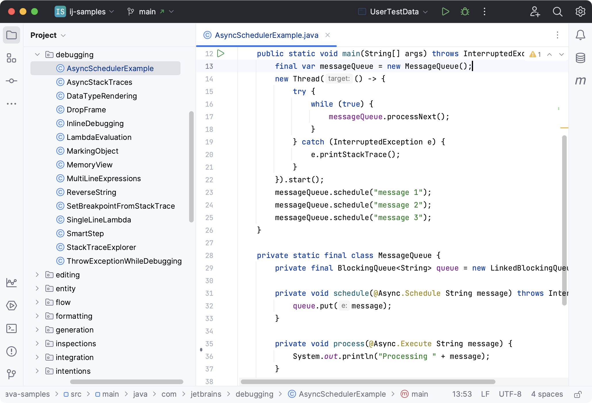

IntelliJ IDEA

Parmi la multitude d'outils que doit savoir manipuler un développeur, il y a des incontournables: les environnements de développement (IDE). Mais lorsqu'on débute il n'est pas aisé de s'y retrouver pour savoir sur lequel s'attarder principalement: langages favorisés, fonctionnalités, design, extensions, raccourcis d'édition... Autant de points à considérer que d'environnements à disposition, de quoi faire tourner la tête. Longuement débattues sur moult forums, les qualités de l'un ou l'autre seront malmenées par tel ou tel partisan pur et dur, mais même à travers les préférences personnelles de chacun il se dégage des points saillants. En attendant voici un aperçu supposément objectif de 5 d'entre eux, parmi les plus utilisés sur le marché.

| Forces | Faiblesses | |
|---|---|---|
| IntelliJ IDEA |
- Excellent pour Java/Kotlin - Bon support Maven, Gradle, Spring - Refactoring avancé - Intégration Git solide - Auto-complétion très efficace - Version Community gratuite |
- Gourmand en ressources - Interface complexe au départ - Courbe d'apprentissage raide au début - Version Pro chère |
| Eclipse |
- Mature, utilisé en entreprise - Bon support Java (C/C++ aussi avec plugins) - Très configurable - Large écosystème de plugins - Gratuit et open source |
- Interface vieillissante - Prise en main difficile - Plugins parfois instables - Lent au démarrage |
| Visual Studio |
- Excellente intégration .NET/C#/C++ - Debugger puissant - UI soignée - Outils pro intégrés (tests, profiling, Azure...) - Idéal pour le dev Windows - Version Community gratuite |
- Très lourd (poids, interface) - Pas natif sous Linux - Trop complexe pour petits projets - Surchargé hors .NET/C++ - Version payante très chère |
| PyCharm |
- IDE Python très complet - Excellent debug/test/venv intégré - Analyse de code intelligente - Interface propre - Version Community gratuite |
- Lourd comparé à VS Code - Dense pour les débutants - Lent au démarrage - Moins adapté à d'autres langages |
| VS Code |
- Léger, rapide à lancer - Très personnalisable via extensions - Interface moderne et intuitive - Excellente prise en charge de nombreux langages (via plugins) - Parfait pour Git, Markdown, et le dev web. - Courbe d'apprentissage douce - Gratuit et open source |
- Beaucoup de choses à installer soi-même - Moins puissant pour gros projets - Debug moins fluide que dans des IDE complets |
Un bon point de départ pour le choix d'un IDE sera avant tout votre langage d'intérêt. On peut ensuite peser la courbe d'apprentissage requise pour arriver à s'en sortir dans l'IDE. Une fois l'IDE choisi, dès l'acquisition d'un peu d'aisance on pourra fouiller un peu plus dans les options. Il pourra alors être pertinent d'aller tester les environnements concurrents une fois les compétences de base développées. En effet, les habitudes acquises sur l'un peuvent souvent se transférer sur l'autre, parfois en changeant quelques préférences, d'autres fois en allant chercher le bon plugin. De plus il n'est pas rare de trouver des fonctionnalités similaires ailleurs. Le tout c'est de commencer, alors à vos claviers !